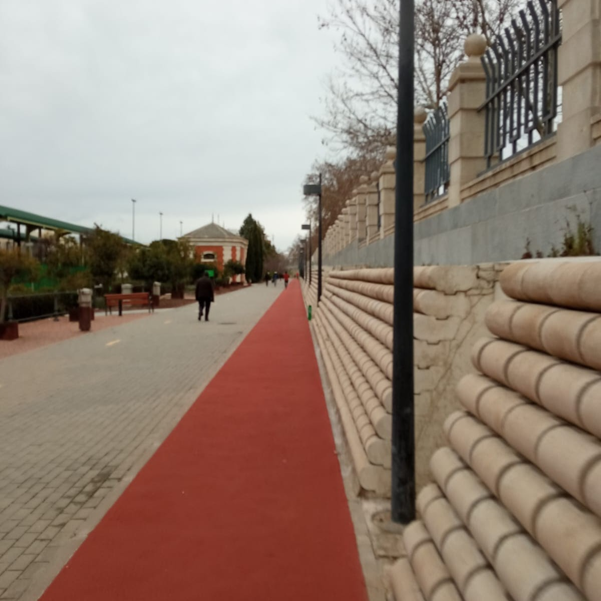
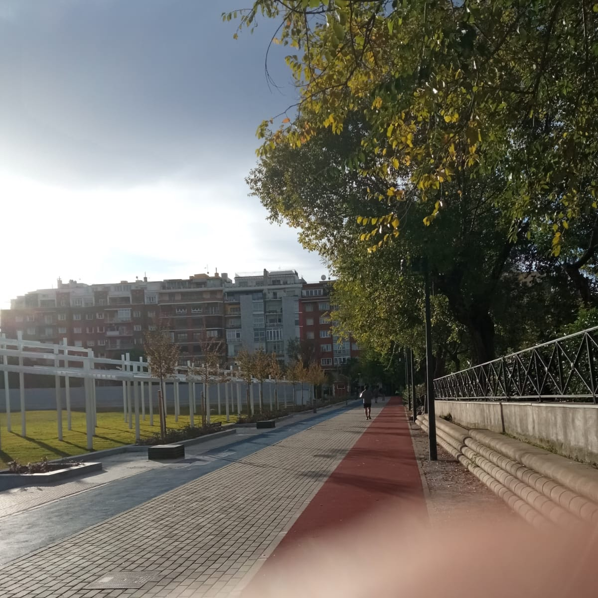
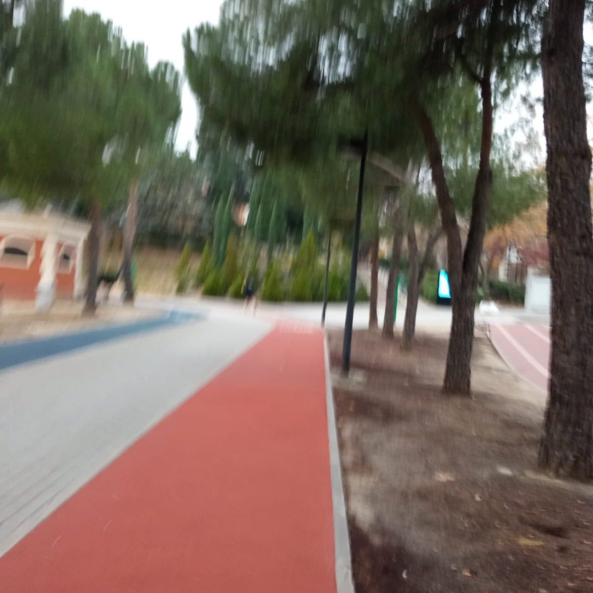
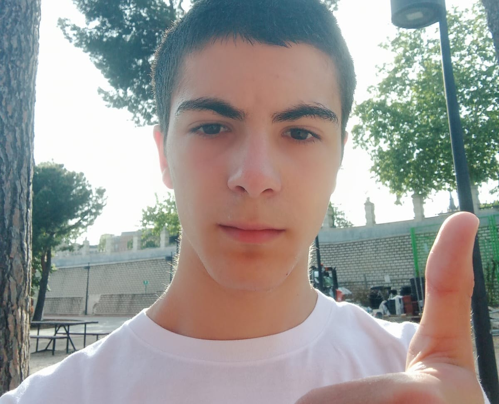
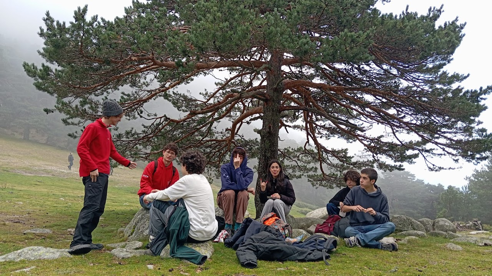

CorrerAntes del Bachillerato Internacional nunca había hecho ejercicio ni participado en deportes fuera del entorno educativo. Aunque me divirtiera jugar con otros, de niño nunca me interesó la competición física o los deportes de equipo, y como en mi casa no había interés por los deportes, no llegué a participar en ninguno. Cuando me enteré de que tendría que hacer alguna actividad física para el diploma del bachillerato internacional, realmente no sabía qué hacer. |
|||
|---|---|---|---|
Colección de fotografías tomadas corriendo a lo largo del curso. |
|||
|  21/10/23 |
 07/12/23 |
11/2/24 |
 25/05/24 |
|
Por otro lado, correr me ha ayudado a lo largo del curso a aclarar mis ideas, es un descanso que me permite desconectar sin sentir que no soy productivo, y distraer mi mente. Después de correr me siento refrescado y centrado, lo cual mejora mi estado de ánimo y me permite ser más productivo el resto del día. |
 | ||
SenderismoAparte de correr he estado llendo siempre que he podido al cas de senderismo. Como con otras actividades físicas, muy raramente había hecho senderismo antes del Bachillerato Internacional, pero decidí apuntarme por el aspecto social. Igual que correr, es un buen descanso de lo cotidiano, y suelo disfrutarlo, tanto las conversaciones como el camino en sí. |
|
|---|---|
|  Aparezco primero contando desde la derecha. |
Aparezco tercero contando desde la derecha. |